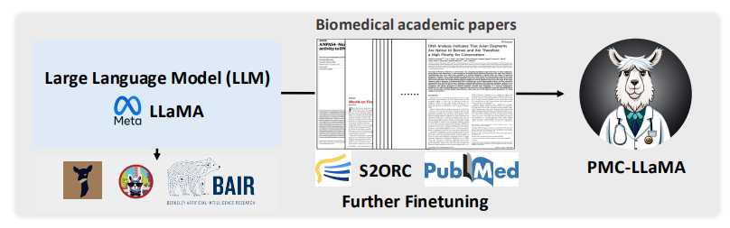
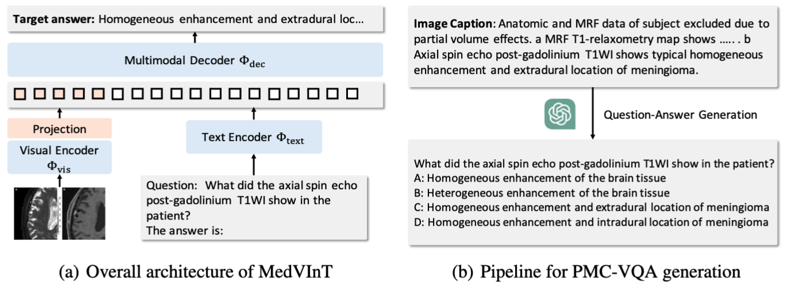

|
I am a graduate student working on deep learning at Shanghai Jiao Tong University, advised by Prof. Ya Zhang and Prof. Weidi Xie. I received my bachelor degree from SJTU in June 2022. My current research interest is in multi-modal representation learning and foundation models.
Email: wx_lin@sjtu.edu.cn /
Wechat: lwxgbsj CV / Google Scholar / Github |
{kind=link}
|
 |
Chaoyi Wu*, Weixiong Lin*, Xiaoman Zhang*, Yanfeng Wang , Ya Zhang, Weidi Xie Technical Report, 2023. In this report, we introduce PMC-LLaMA, an open-source language model that is acquired by fine-tuning an open-source language model on a total of 4.8 million biomedical academic papers for further injecting medical knowledge, enhancing its capability in medical domain. |
|
 |
Xiaoman Zhang*, Chaoyi Wu*, Ziheng Zhao, Weixiong Lin, Yanfeng Wang , Ya Zhang, Weidi Xie Technical Report, 2023. In this paper, we introduce PMC-VQA, a large-scale medical visual question-answering dataset, which contains 227k VQA pairs of 149k images that cover various modalities or diseases. |

|
Weixiong Lin*, Ziheng Zhao*, Weixiong Lin, Chaoyi Wu, Yanfeng Wang , Ya Zhang, Weidi Xie MICCAI, 2023 We collect a biomedical dataset, PMC-OA with 1.6M image-caption pairs collected from PubMedCentral's OpenAccess subset. |
Based on a template by Jon Barron. |